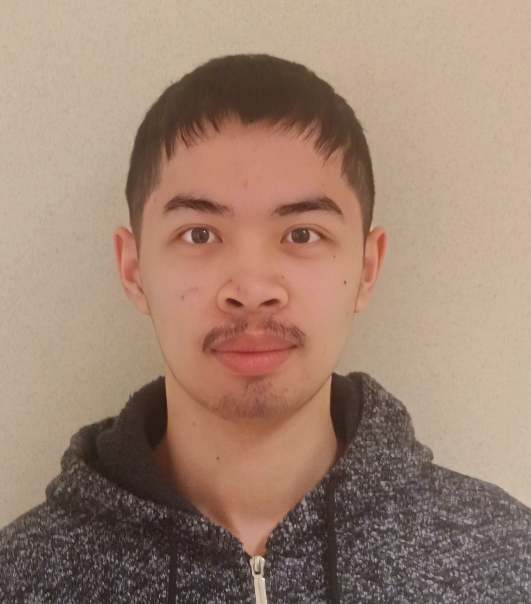

Over mij
Wie ben ik?
Mijn naam is Jonathan Yang, ik ben 20 jaar oud en woon in Mol-Donk. Al van jongs af aan heb ik een sterke interesse in technologie, sinds ik er voor het eerst mee in aanraking kwam tijdens de opkomst van innovatieve ontwikkelingen zoals het internet.
Deze interesse werd deels aangewakkerd door mijn vader. Hij was erg technisch aangelegd en probeerde altijd dingen te repareren wanneer dat mogelijk was. Daarnaast maakte hij ook praktische doe-het-zelfprojecten, zoals een eierverwarmer voor de kippen in onze tuin.
Daarnaast heb ik een spraak- en taalontwikkelingsstoornis (STOS). Door deze stoornis heb ik mijn algemene aanpak moeten aanpassen. Ik leerde informatie te verwerken op een manier die voor mij begrijpelijk is, waardoor ik vaak een perspectief ontwikkel dat buiten de norm ligt.
Ook heb ik een eigen communicatiestijl ontwikkeld om mijn gedachten en ideeën helder over te brengen naar anderen. Dit doe ik vaak door gebruik te maken van metaforen en herkenbare situaties die voor beide partijen duidelijk zijn, zodat ik een brug kan slaan in de communicatie.
Deze ervaringen hebben mijn probleemoplossend vermogen versterkt en helpen mij om uitdagingen met een analytische en volhardende mindset aan te pakken.
Waarom Toegepaste Informatica?
Mijn keuze voor Toegepaste Informatica is gebaseerd op verschillende redenen. De eerste en meest eenvoudige reden is dat dit de enige richting was die mij echt interesseerde.
Daarnaast had ik al van jongs af aan een soort ingenieursmindset. Ik was altijd nieuwsgierig naar hoe dingen werken, zoals de logica achter een spel dat ik speel of de werking van machines. Dit motiveert mij om voortdurend nieuwe kennis op te doen, zodat ik zaken beter kan analyseren en begrijpen.
In het vijfde en zesde middelbaar kreeg ik een eerste echte kennismaking met IT via de richting Informatica Beheer. Deze opleiding combineerde programmeren met inzicht in de werking van een bedrijf. Sindsdien is mijn interesse in de IT-sector alleen maar verder gegroeid.
Mijn Contact Gegevens:
Mijn Hobby's
Naast mijn studie en interesse in technologie, heb ik ook een passie voor fotografie, koken en het leren van nieuwe talen. Deze hobby's helpen me om creatief te blijven en nieuwe perspectieven te ontdekken, wat ook mijn benadering van technologie beïnvloedt.